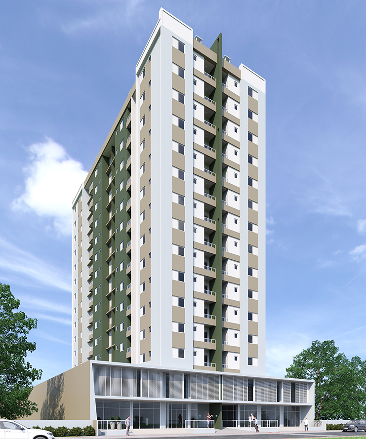

A empresa foi fundada no ano de 1997 , atuante no segmento projetos de engenharia, com a elaboração unicamente de projetos complementares, Preventivo de incêndio e Hidrossanitário. Ao longo destes anos os projetos foram sendo aperfeiçoados pelos softwares disponíveis para a necessidade do mercado de trabalho, onde o BIM como ferramenta passa a ser indispensável para uma entrega mais próxima a realidade da construção civil . No ano de 2017 a iniciamos o desenvolvimento de projetos arquitetônicos, pois se faz necessário diminuir cada vez mais as interferências com as diversas disciplinas que envolve uma construção predial . A importância de desenvolver em um mesmo local os projetos de arquitetura , traz ao cliente uma maior conforto e a certeza que as maiores interferências estão sendo analisadas em conjunto, evitando desperdícios em obras , melhorando a produtividade dos profissionais que atuam na execução de obra.
Sobre:
TORRE DI TRENTO

- Localização: Rua Vereador A. Machado
- Área Privativa: 67 à 86 m²
AcessarTORRE FLORENÇA

- Localização: Rua Wenceslau Braz
- Área Privativa: 108 à 126 m²
AcessarVILA CATARINA
- Localização: Rua Antônio Hulse, 53
- Área Privativa: 97 à 105 m²
Acessar